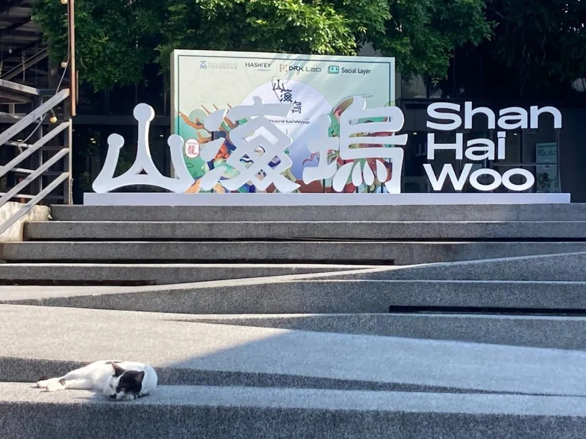

当下的清迈，很多事正在发生。十多个pop-up city像春笋般在这片土地上发芽。中国、南美、印度、欧美、东南亚，来自世界各地的web3社区在清迈这个大型实验场建立了不同的pop-up city 进行着未来人类的生活和工作、教育协作、以及社会形态的探索。
Pop-up City
Pop-up City（快闪城市）指的是一个临时搭建的城市空间，通常只存在一段时间。它可以是为了某个特定活动或节日而建立的，例如美国的火人节（Burning Man），在那里，人们在短时间内创建一个完整的城市环境，聚集、生活、庆祝，但活动结束后，整个城市会被拆除，恢复原貌。

图为华语社区发起的pop-up city 「山海坞」
图片:文倩
从社区/社群/pop-up city到原型社会，再到未来新的社会形态，这条路径是否可行，还需要真实的实践与一定的时间来进行验证。这篇文章中，我们先聚焦于这条路径的起点 —— 社区/社群本身。
首先，明确一下，这里我们所说的社区/社群并非是兴趣小组、学生社团、游戏公会、街道组织，也不仅是某个微信群、知识星球、豆瓣小组、discord社区、telegram群。这种新型社区/社群是一个综合性的社会实体，不仅提供生活与居住空间，还具备生产创造的经济功能和教育功能。换而言之，这种新型社区/社群整合了家庭、公司与学校的功能与社会角色。
新型社区/社群——
当下社会，家庭是最小的社会结构单元。我们一般以家庭为单位居住和生活。一个人成年之后，买房、结婚、生子，一家人生活在一起。然而，是否存在一种可能，人们不再仅仅以小家庭的形式生活，而是会以更加灵活的方式生活居住，甚至出现不以婚姻关系为基础的新式家庭。
这种灵活居住的社会趋势已经出现了，越来越多人选择旅居的生活方式。未来时代将会是一个非常自由流动的时代，人们不再是在某地买一个房子，终生定居于此。相反，人们会像风一样，行走在世界各地，在不同的地方生活。而散落在世界各地的新型社区/社群，就给他们提供了一项居住、落脚的选择。例如，各个Web3社区这次在清迈pop-up city，租赁了别墅或公寓，打造了共居空间，成员们可以在这里一起生活。在中国也逐渐出现一些社区，例如安吉的数字游民社区，提供居住场所。当然，一个理想的新型社区，不仅能提供居住场所，还需要提供情感归属、社交支持与安全保障。换而言之，提供“家”的感觉。

图为MEGAZu Pop-up City 在清迈提供的共居空间
图片来自于@kuri_olga推特
人们关于新式家庭的探索，也开始出现。科幻小说《关于我的太空英雄》中，两个未婚妈妈，各自单身生育了女儿，她们带着各自的女儿合住共居，一起生活。这本质上则是以友缘关系代替性缘关系，构建起全新的家庭结构。
我知道这听上去太疯狂了，但是who knows？随着数千年父权文明的逐步瓦解，婚姻制度作为强化父权制统治的社会工具，也在经历着深刻的变革。谁知道我们未来的家庭生活结构会走向何处呢？或许未来的家庭纽带不再依赖于性缘关系，而是基于共同理念或互助需求。或许新的社区/社群成为我们新的居住选择，甚至成为人们构建新型家庭和生活方式的基石。
相比于线上社区，新型社区/社群提供了一种物理上的实体居住空间；相比于普通的酒店、青旅、民宿，新型社区/社群不仅是一个住所，还提供了人与人之间情感上的连接。
新型社区/社群——
当听到“人们未来的生活，如风一样行走在全球各地”，你可能首先冒出来的疑问是，那我的工作怎么办？眼下常见的答案有，远程工作、自由职业。然而，这种新型社区/社群将提供另一种选项。
新型社区/社群能够承担生产活动与经济功能，成为一个完整的经济实体。在现有的社会中，公司是主要的生产组织，人们通过公司制度进行协作分工，创造社会财富和价值。类似地，这些新型社区/社群也具备组织、协作、生产的功能。然而，与传统公司不同的是，新型社区的协作与治理结构更加灵活、去中心化，是基于成员的共同利益和贡献来实现经济运转和财富分配。
图为the-mu社区在清迈的共享办公空间
大家在这里讨论项目、一起工作
成员能够如何通过社区/社群获得收入？
✦
社区内部工作（大白话：让社区发工资）
社区的正常运营离不开成员的日常管理，比如维护运营、市场推广等。成员可以通过在社区中承担具体工作来获得收入，如技术开发、市场运营等，通常由社区支付薪酬。像 SeeDAO, Uncommons, LXDAO 等社群，都有半全职人员负责日常事务。另外，社区有时候也会发布一些付费任务，比如需要某个工具的开发或其他专业服务等等。
开发产品或项目
社群成员可以成立项目小组，开发产品或服务。注意，这些产品和服务都将直接面向外部市场。社区/社群可以对项目提供一定的孵化支持，例如利用其社区/社群的品牌影响力，帮助项目go to market。项目带来的营收，按照一定比例，在社区/社群与项目组成员之间进行分配。
争取社区资助或奖金
很多社区会设立专门的资助项目（grants），成员可以通过申请这些资助来获得资金支持，用于开发新项目或进行研究。
社区代币
一些社区可能会发行自己的代币。成员持有代币就像持有了社区/社群的股份。如果一个社区/社群在长时间内获得了飞速增长，恭喜你！你买到了潜力股，将获得超额回报，就像在2008年购买了谷歌股票、2016年购买了英伟达的股票。不过要注意的是，代币价格具有极高不确定性，可能获得超高收益，也可能本金全部归零。
以上是几种常见的，在社区里赚钱的方式。那么社区/社群目前主要的营收来源又是什么呢？
社区/社群目前主要的营收来源
✦
项目方赞助或基金会支持
当前，大部分社区/社群的资金主要依赖于Web3大型项目、基金会或个人的赞助。这些资金为社区的初期运作提供了保障，但尚未形成稳定且可持续的现金流。
组织活动
一些社区通过组织和举办活动来获得收入。例如举办黑客松、web3峰会、工作坊等等。
内部孵化产品与项目
社区孵化出的产品（如去中心化应用或其他服务）一旦推向市场，所产生的营收通常会在社区与贡献者之间进行分配。通过产品营收，社区不仅增强了自身的经济独立性，还提供了成员创造财富的机会。
资产管理与投资
社区可能会将其国库资金用于投资，或者通过DeFi项目获得更多收益。例如，有些社区将一部分资金用于购买比特币，如果比特币价格上涨，社区的国库也会相应增加。当然，投资必然伴随着盈利与亏损的双重可能性。这就需要社区/社群财务管理者的智慧、策略与运气了。
从以上分析可以看出，新型社区/社群一个非常核心的特点在于，它不仅创造价值、产生收入，还通过特定机制将这些收益重新分配给对社区做出贡献的成员。
这与传统公司非常不同：社区中的成员和组织是一个真正的利益共同体。成员通过贡献推动社区发展，而社区产生的经济回报又反哺给成员。这种模式不仅打破了传统公司的层级结构，更加重新定义了人们如何在组织中共同创造和分享价值。
新型社区/社群——
学校承担教育功能。很遗憾的是，当代学校提供的教育是以培养社会牛马为主要目的。我们的教育教会我们如何成为一个合格的打工人、工具人，而缺失了教育最重要的功能，那就是教会我们如何成为一个“人”。
尤其是应试教育，没有教会我们如何思考、如何构建起自己的一套知识系统，它只是给我们塞了一堆信息、知识以及愚蠢又过时的世界观和价值观。而随着ai时代的来临，这些信息、知识唾手可得，这些过时的观念也只会让我们成为越来越disadvantage的那群人。
新型社区/社群所提供的教育，帮助我们成为独立而完整的“人”，成为AI时代下的超级个体。
图为加密领域知名人士Balaji在马来西亚新山发起的一所popup学校，
旨在弥补现代传统学校教育中缺失的部分。
图片来自于网络
下面是新型社区/社群教育已经凸显的一些特点：
探索知识，而非灌输知识
在社区中，每个成员即是老师，也是学生，既学习知识，也分享和创造知识。注重协作与知识共享，而非传统的单向知识传授。
最好的考试是实践
对于理论知识最好的检测是实践。社区内成员，完成理论学习后，可以直接合作设计开发项目，go to market, 让市场反馈来进行检验。
认识你自己
关于哲学、人文、艺术的探讨，在现代社会体系中，往往被认为是“无用”、“不赚钱”的教育，因此是极大缺失的一部分。但人之所以是人，而不是AI，正是因为人不仅追求效率最大化、经济利益最大化，人还追求爱与美，追求幸福与快乐。这部分教育在教我们回答关于生命的问题。诸如：
我是谁？
我自己的天赋使命是什么？
我想要过怎样的人生？
我有什么样的创造力？
……
听到这里，你可能已经感受到新型社区/社群想要实现的教育了，它不是追求一个正确答案，也不仅仅是教会某项技能，而是帮助个体构建自己的思考方式、认知系统，构建独立且完整的人格，构建自己去探知世界的方法，也构建起充满爱与美的人性。
关于这部分的更多内容，等我11月份去到 The Network School 亲身体验之后，再做更加深入的探索和研究。
成员们共同生活、居住，参与生产劳动以创造价值，并进行教育。这听上去，不禁也让让人联想到原始社会的部落和封建社会的氏族。那么，相比于这些早期的社会结构，新型社区/社群有哪些根本性不同呢？
以“共识”替代“血缘”将人们连接在一起
社区/社群不是由血缘关系构建起来的，在这个社区/社群里，连接社区成员最重要的纽带是认可同样的理念、价值，用一个很web3的词来形容，就是拥有共识。
社区/社群之间是非排他、非竞争关系
一个人可以同时加入不同的社区/社群。不同的社区之间不是竞争者，而是相互补充的存在，它们拥有各自的特点，不同的文化、氛围与vibe。例如，有的社区/社群更加偏向于极客文化，成员多以开发者为主，大家在一起写代码、开发科技产品、参加黑客松比赛。有的社区/社群更加偏向于创作者文化，大多成员以媒介、艺术创作为主。
社区/社群具有开放性
这里的开放性体现在两个方面，一是对所有人都开放申请，任何人都可以申请加入；二是成员可以自由退出。有一些社区/社群会有加入门槛，会对加入的成员有所筛选，比如需要写申请信或者缴纳费用，比如说FWB DAO、Zuzalu。这些要求通常是为了确保成员与社区的价值观相契合。
这些新型社区/社群正以一种打破传统、挑战常识的路径，构建传统家庭、公司、学校无法实现的生活方式、经济模型、教育方式。
它们带来的不仅是生活方式的变革，还承担着经济和生产功能。通过灵活的协作模式和创新的治理结构，成员们能够自由地工作、生活，同时也在教育和自我成长中，探索着生命的终极意义。
接下来的计划里，我将实地拜访更多的pop-up city，亲身去看看它们的发展现状，以及成员们在其中真实的生活与体验。
以上均为个人观点，可能存在错误及偏颇之处，我将在实际探索中一点点修正。
感谢阅读
评论交流